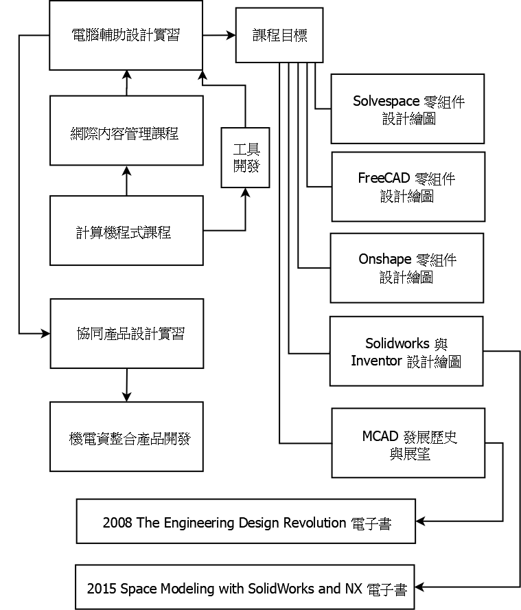

Next >> Theories
About
本電腦輔助機械設計實習課程, 除了教導學生使用電腦輔助設計套件 ( Solidworks, NX) 中, 各種參數式 3D 零組件設計與繪圖功能外, 也導入開源的 Solvespace, FreeCAD, V-rep 與 Webots, 讓學員了解這些中高端套件的底層所包含的各種數學原理與程式技術. 並且透過全雲端 Onshape 的協同設計, 引領學員一窺未來全球協同產品開發流程可能呈現的架構與風貌.
電腦輔助設計實習課程承接計算機程式與網際內容管理課程, 並與協同產品設計實習採用相同工具與理念, 希望所有學員能夠在電腦軟硬體與網路系統的充分整合應用下, 有能力透過程式方法與網際內容管理的架構, 執行創新產品開發.
課程工具套件:
2019Fall可攜套件.7z - 計算機程式與電腦輔助設計實習共用
GitExtensions.7z - 計算機程式與電腦輔助設計實習共用
FreeCAD 0.18.7z - 電腦輔助設計實習課程專用
V-rep 3.6.1 rev 4.7z - 電腦輔助設計實習課程專用
Webot 2019a.7z - 電腦輔助設計實習課程專用
電腦輔助設計室與協同設計室行事曆
全頁檢視
2019 Fall 學期教育目標:
使用可攜程式系統與網際內容管理系統, 管理各學員與分組學習內容, 同時利用 Solidworks, NX, Onshape, Solvespace, FreeCAD, Webots 與 V-rep 執行機電資整合產品開發, 當面臨各種電腦輔助機械設計階段所遭遇問題時, 各學員可利用客製化程式加以解決.

Textbooks:
1) 2015- Space Modeling with SolidWorks and NX
https://link.springer.com/book/10.1007/978-3-319-03862-9
2) 2008- The Engineering Design Revolution
The Engineering Design Revolution (a.k.a. cad_history.pdf)
達成學期教育目標之評量方式與標準:
評分比例:
維護個人倉儲與網站 (10%)
Rover 零組件設計與分析 (20%)
Rover 系統控制與模擬 (20%)
機電資整合專案執行 (50%)
評分方式:
電腦輔助設計實習每週自評與互評表單: https://forms.gle/raTtrfjv8cMMVSZd6
學員自我評量 (30%)
分組學員相互評量 (30%)
簡報與倉儲歷程查驗 (40%)
教學方式:
課堂講授
操作錄影
學員實習
分組報告
參考資料:
https://open.umn.edu/opentextbooks/subjects/engineering
Next >> Theories